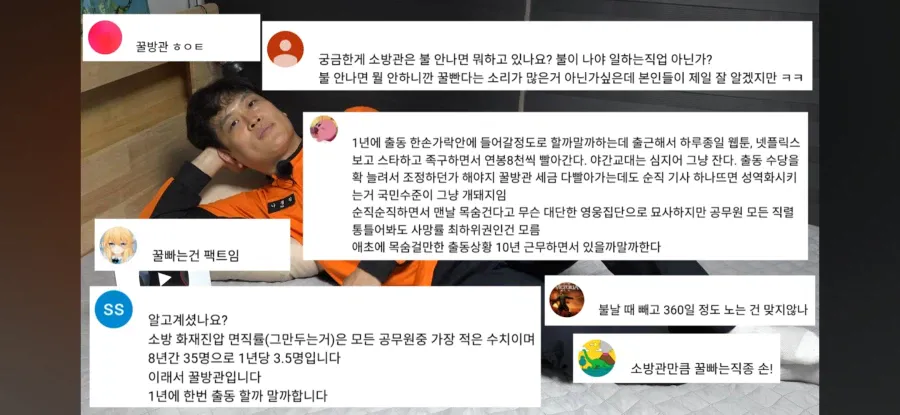

???: 개꿀입니다 내년 공채 많이 지원해주세요

???: 개꿀입니다 내년 공채 많이 지원해주세요
꿀맞죠 꿀벌말고 장수말벌에서 채취하는 꿀이지요
군인 경찰 소방은 일이 없어야 좋은거지
소방관이면 사고 안터졌을때 꿀좀 빨고 쉬게 냅둬라 좀
소방관은 꿀이어야 하는 직업이야...
언제 어디서 어떻게 화재가 터질지 모르는데
소방관이 헬이면 시발.....ㅈ 되지.. 걍 꿀빠는게 근처에 화재도 안나고 좋은거지.
예전에 진짜 전체 화재 난 건물에서 화염이 치솟고 있는 출입구로 구조대 "걸어"나오는거 직관한 적 있음.
꿀 빨아도 됨.
난 이분 최근에 본게
쇼츠로 장비 풀장착하시고 12키로인가 마라톤 뛰시는걸보고 (옆에 소방관 한두분 더 지나가심;;;)
와 소방관분들 체력 진짜 개쩌네 싶었음..
직렬별 평균 수명 (사망자 평균 연령 순)
• 판검사 (법관·검사): 82.4세
• 지도직 (농어촌 지도직 등): 81.7세
• 교육직: 81.6세
• 기능직: 79.3세
• 연구직: 79.1세
• 경찰직: 78.8세
• 일반직: 78.3세
• 공안직: 78.1세
• 소방직: 74.7세
꿀좀 빨아도 됨
그렇게 꿀이면 시기질투코리아에서 인정받을수없음
소방관아조씨 몸봐라 ㅋㅋㅋㅋ
있는대로 망가진척하는데 은근히 떡대 옷폼 좆된다
그거 공으로 유지되겟냐
교순소 3교대 수당 개꿀?
아 너도 하라고 ㅋㅋㅋㅋㅋ
소방관 경찰관이 업무로 헬인 나라면
ㅈ된거긴해 ㅋㅋㅋㅋㅋㅋㅋㅋ
꿀방관 꿀방관 그러는데 그럼 너도 하면되지? 라고 물으면 세상 모든 핑계를 다 대서라도 난 못한다는걸 어필하는 새끼들이 한트럭임 ㅋㅋㅋ
애초에 남의 직업 함부로 비하하는 새끼들 치고 제대로된 사람 없더라
소방관이 헬이면 시민들은 둠스데이 인거임..
소방관은 똑똑한건 맞음
일 없는게 사회적으로 긍정적인 직업 1,2,3이 군인, 경찰, 소방관이야
족구도 차고 여유가 있다 손치더라도 시발 일터지면 목숨걸고 끔찍한 현장들 다 봐야되는거잖아
행정적인 업무도 있는데 이게 민원업무는 일부분(소방시설 관련)이고 대부분 소방 업체를 통해서 처리하다보니 일반인들이 어떤 행정업무들을 처리하는 지 전혀 알지 못하니 출동부서는 출동없으면 할일이 없는거 아니냐라고 막연하게 생각하는게 편하니까 그렇게 생각하게 되는거 같아.
소방관은 계속 꿀빨았으면 좋겠다
판사는 욕 많이 먹어서 오래 사나
판새들은 화살세례좀 받아서 평균수명 내려와야하는데 너무 꿀이다
현장 한 번 경험하면 평소엔 꿀 빨아야 된다고 생각하게 됨
남들 도망가는 곳을 뛰어들어 가야 하는데
그게 진짜 쉽지 않음
10년 전에 2층에 있는 술집에서 알바하다가 큰 화재 한 번 경험해봤는데
진짜 어디서 뭐가 터질 지 모른다고 생각하니까
심장 겁나 빨리 뛰면서 아무 생각 없이 거의 굴러가면서 도망감
그 와중에 소방관들 뛰어 들어가는 거 보고
난 소방관 절대 못하겠다 생각함
왜케 남의 직업을 비하하지 못해 안달들이지.
그냥 존중하고 감사하고 각자 자리에서 꿀 빨 수 있으면 좋은거지